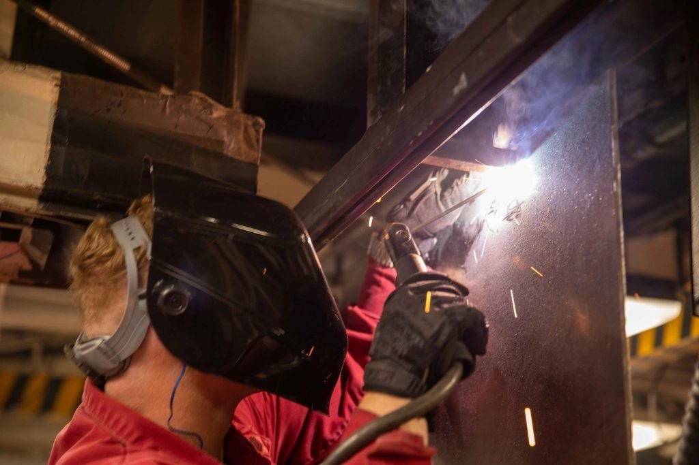

Drawing office
General arrangement drawn to the building, duty class and relevant IS code.

Material handling · Bahadurgarh · Est. 1985
E.O.T. cranes, gantries, hoists, winches and hydro-mechanical gates — designed, manufactured, erected and commissioned from our own works since 1985.
01 / What we make
E.O.T. and H.O.T. cranes, goliath gantries, wire rope hoists, winches, gates and floor handling equipment.
02 / Who we serve
Power sector, steel plants, railways, automobile sector, electricity boards, coal fields, metallurgical plants and defence establishments.
03 / Why Rockwell
Designing, manufacturing, erecting and commissioning material handling equipment since 1985, with more than 1,500 installations.
The product range / 17 lines
 01 / CRANES
01 / CRANESDesigned and manufactured to customer requirements and site conditions.
Up to 150 t ↗02 / CRANESOutdoor gantries for hydro-electric projects, shipping yards and mines.
Up to 180 t SWL ↗ 03 / HOISTS
03 / HOISTSModular monorail hoists built so every sub-assembly comes apart on its own.
250 kg – 30 t ↗ 04 / WINCHES
04 / WINCHESHeavy duty winches to IS 9507, in single or variable speed.
1 t – 20 t rope pull ↗ 05 / HYDRO-MECHANICAL
05 / HYDRO-MECHANICALGates, stop logs, hoisting bridges and embedded parts for hydro and irrigation projects.
Up to 180 t SWL ↗ 06 / HANDLING
06 / HANDLINGAn economic answer to stacking and truck loading without a forklift.
500 – 2000 kg ↗ 07 / CRANES
07 / CRANESA self-raising, portable, height-adjustable gantry that two people can erect.
1 t – 20 t ↗ 08 / HANDLING
08 / HANDLINGHydraulic pallet trucks conforming to ISS 500, built since 1976.
1000 – 3000 kg ↗DRAG / SHIFT + SCROLL / ARROW KEYS TO TRAVEL THE RANGE
See all 17 product lines ↗How we work
Plate at one end, a tested crane at the other. Eight stations, in the order the steel passes through them.
Manufacturing & assembly ↗General arrangement drawn to the building, duty class and relevant IS code.
Plates marked and profile cut for the girder and end carriage.
Box girder squared, tacked and welded on the jig and welding manipulator.
Trial assembly, full travel and proof load at 125% of safe working load.

BAHADURGARH / FABRICATION FLOORBefore it leaves the works
Every machine is load tested at 25% overload. Third party inspection by RITES, EIL, MECON or DNV is available on request, with test certificates.
Testing and commissioning ↗PROOF LOAD / SAFE WORKING LOAD
Trial assembly, brakes, limits and travel are proved before despatch.
 HYDRO-MECHANICAL DIVISION
HYDRO-MECHANICAL DIVISIONGates, gantries, hoisting arrangements
Special duty E.O.T. cranes, gantry cranes, stop log gates, radial gates, draft tube gates, intake gates, spillway gates and vertical gates, along with the hoisting arrangements that lift them.
Selected projects ↗Designed, manufactured, supplied and commissioned for NHDC.
NHDC / GANTRYSWL gantry crane for U.P. State Irrigation Department.
IRRIGATION / GANTRYSWL gantry crane with out-of-log lifting facility.
HYDRO-ELECTRIC / GANTRYOur clientele
Selected client names from the reference; see the full client list by sector.
Client sectors and names ↗Start with the lift
Choose an equipment family and add your capacity, span and application. The selector points to a matching line from the Rockwell range.
Have a drawing or a lifting requirement?
Send the capacity, span and head room — or just the drawing. We will come back with a specification and a price.